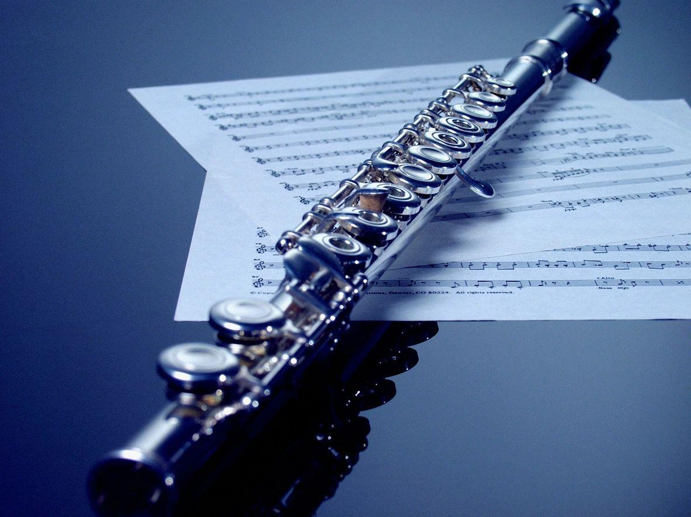
Harmonização aplicada na flauta
A flauta toca uma nota por vez. A harmonia, você leva na cabeça.
- Violão
- Baixo
- Teclado
- Flauta
- Cavaquinho
- e outros
Esta cartilha ensina, passo a passo, a enxergar escalas, graus e acordes dentro das melodias que você toca. Cada aula usa só o que você aprendeu nas anteriores — no fim, você vai ler uma cifra como Dm7 e já saber quais notas tocar.
Os 4 passos para estudar cada exercício
- 1
Ouça
Aperte ▶ Ouvir e acompanhe a partitura com os olhos.
- 2
Fale
Sem a flauta, diga em voz alta a cifra e os graus: “Dó sete maior: um, três, cinco, sete”.
- 3
Toque
Devagar (tempo 60), respirando na troca de acorde. Primeiro articulado, depois ligado.
- 4
Mude
Toque de trás para frente, em outro tom ou com outro ritmo. Quem muda, entende.
Como ler as partituras desta cartilha
Para ficar na região mais confortável da flauta, os arpejos sempre começam entre o Dó grave e o Si logo acima. Por isso, em alguns campos harmônicos, um acorde “desce” uma oitava em relação ao anterior. É de propósito.
Base teórica inspirada em Acordes Horizontais: formação de acordes para flauta transversal, de Daniel Rebel e Carvalho (UFRJ, 2021), com conteúdo simplificado para iniciantes.
O nome das notas e as cifras
Antes de falar de harmonia, precisamos de uma língua em comum. Na música popular, cada nota tem uma letra — e é com essas letras que se escrevem as cifras.
A cifra começa no Lá: A, B, C, D, E, F, G. Decorando que Dó = C, o resto segue em ordem.
As sete letras
| Dó | C | Sol | G |
|---|---|---|---|
| Ré | D | Lá | A |
| Mi | E | Si | B |
| Fá | F |
Os acidentes na cifra
# (sustenido) sobe meio tom: F# = Fá sustenido.
b (bemol) desce meio tom: Bb = Si bemol.
Tudo o que vem depois da letra fala do tipo de acorde: m = menor, 7 = sétima, 7M = sétima maior. Isso vem na Aula 3.
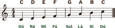
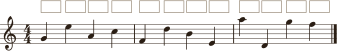
Jogo da aula: Letra-relâmpago
O professor (ou um colega) fala uma letra — “E!” — e você toca a nota o mais rápido que puder. Depois troquem de papel. Comece só com C, D, E, F e G; quando ficar fácil, inclua A e B.
Teste rápido
- Qual é a letra do Sol?
ver resposta
G - A cifra F é qual nota?
ver resposta
Fá - Escreva em cifra: Lá, Si e Ré.
ver resposta
A, B e D - O que significa Bb?
ver resposta
Si bemol
Checklist para avançar
A escala maior e os graus
Uma escala é uma escada de sete notas. Cada degrau ganha um número — o grau. Pensar em números em vez de notas é o segredo para tocar em qualquer tom.
Toda escala maior segue a mesma receita de distâncias: tom, tom, semitom, tom, tom, tom, semitom. Mudou a primeira nota, a receita continua igual.
Os semitons ficam sempre entre o 3 e o 4 e entre o 7 e o 1. Depois do 7, a contagem volta para o 1 — o Dó agudo também é grau 1.
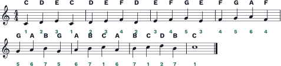
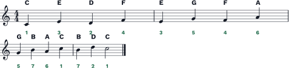
A mesma receita em outros tons
Em Sol maior, para o semitom cair entre o 7 e o 1, o Fá precisa subir: F#. Em Fá maior, para o semitom cair entre o 3 e o 4, o Si precisa descer: Bb. A armadura de clave já avisa isso no começo da pauta.
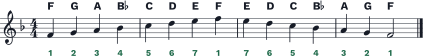
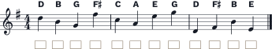
Jogo da aula: Telefone musical
Um “número de telefone” é uma sequência de graus. O professor dita, você toca na escala do dia. Exemplo em Dó: 5-3-1 e 1-3-5-1. No capítulo Jogos há um gerador de números para treinar sozinho.
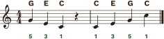
Teste rápido
- Qual é a receita da escala maior?
ver resposta
T – T – St – T – T – T – St - Em Sol maior, qual nota é o grau 7?
ver resposta
F# (Fá sustenido) - Em Fá maior, qual é o grau do Bb?
ver resposta
Grau 4 - Qual nota é o grau 5 de Ré maior?
ver resposta
A (Lá)
Checklist para avançar
Como nasce um acorde
Na flauta, um acorde é tocado nota por nota — um arpejo. Seu ouvido junta as notas e escuta a harmonia. Para montar um acorde, basta a regra do “pula-uma”.
Pule uma nota, pegue a seguinte. Três notas = tríade (1-3-5). Quatro notas = tétrade (1-3-5-7).
Os tipos de tríade
| Cifra | Nome | Graus | Em Dó | Som |
|---|---|---|---|---|
| C | maior | 1 3 5 | C E G | alegre, estável |
| Cm | menor | 1 ♭3 5 | C E♭ G | triste, suave |
| C° | diminuta | 1 ♭3 ♭5 | C E♭ G♭ | tenso, instável |
| C(#5) | aumentada | 1 3 #5 | C E G# | misterioso |
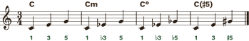
As tétrades que vamos usar
| Cifra | Nome | Graus | Em Dó | Onde aparece |
|---|---|---|---|---|
| C7M | maior com sétima maior | 1 3 5 7 | C E G B | campo maior e menores |
| C7 | maior com sétima (dominante) | 1 3 5 ♭7 | C E G B♭ | todos os campos |
| Cm7 | menor com sétima | 1 ♭3 5 ♭7 | C E♭ G B♭ | campo maior e menores |
| Cm7(b5) | meio-diminuto | 1 ♭3 ♭5 ♭7 | C E♭ G♭ B♭ | todos os campos |
| C° | diminuto | 1 ♭3 ♭5 𝄫7 | C E♭ G♭ B𝄫 | menor harmônica |
| Cm7M | menor com sétima maior | 1 ♭3 5 7 | C E♭ G B | menor harmônica e melódica |
| C7M(#5) | aumentado com sétima maior | 1 3 #5 7 | C E G# B | menor harmônica e melódica |
Não precisa decorar a tabela inteira agora. As quatro primeiras aparecem já na próxima aula; as outras três só nas aulas de escalas menores.
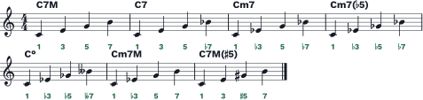
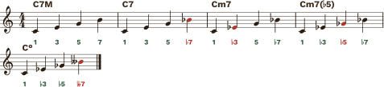
Jogo da aula: Detetive do ouvido
Maior, menor, diminuto ou aumentado? No capítulo Jogos a cartilha toca uma tríade e você adivinha o tipo. Faça pelo menos 10 rodadas por dia nesta semana.
Teste rápido
- Quais graus formam uma tríade maior?
ver resposta
1, 3 e 5 - Qual a diferença entre C7M e C7?
ver resposta
A sétima: no C7M é Si (7), no C7 é Si bemol (♭7). - Quais são as notas do Dm7?
ver resposta
D, F, A e C (1 ♭3 5 ♭7) - Qual acorde tem os graus 1 ♭3 ♭5 ♭7?
ver resposta
O meio-diminuto: m7(b5)
Checklist para avançar
O campo harmônico maior
Agora juntamos as duas aulas anteriores: aplicamos o “pula-uma” em cada grau da escala maior, usando só as notas da escala. Os sete acordes que surgem formam o campo harmônico — a “família” de acordes daquele tom.
Em qualquer tom maior, a sequência é sempre a mesma: 7M · m7 · m7 · 7M · 7 · m7 · m7(b5). Decore como um número de telefone.
Com tríades, a fórmula fica ainda mais curta: maior · menor · menor · maior · maior · menor · diminuto.
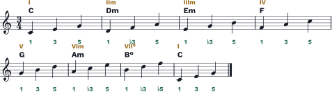
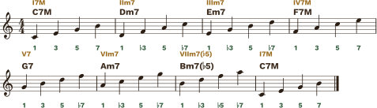
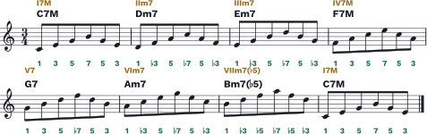
Mesma fórmula, outros tons
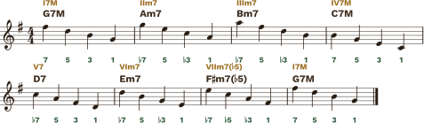
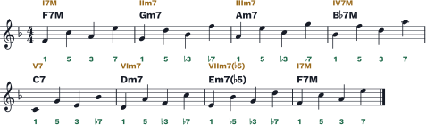
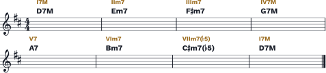
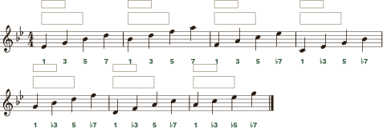
Teste rápido
- Qual é a fórmula das tétrades do campo maior?
ver resposta
I7M – IIm7 – IIIm7 – IV7M – V7 – VIm7 – VIIm7(b5) - Qual é o V7 de Sol maior?
ver resposta
D7 - Em Fá maior, qual é o IIm7?
ver resposta
Gm7 - Qual grau é o único acorde “7” (dominante) do campo maior?
ver resposta
O V (quinto grau) - Bm7(b5) é qual grau em Dó maior?
ver resposta
VIIm7(b5)
Checklist para avançar
Graus em ação: progressões e cadências
As músicas não tocam o campo em ordem: escolhem alguns graus e fazem um caminho. Como você já pensa em números, uma progressão como I – VI – II – V serve para qualquer tom.
A 7ª de um acorde costuma descer meio tom ou um tom para a 3ª do acorde seguinte. Essas são as notas-guia: tocando só elas, a harmonia já aparece.
I – VIm – IIm – V7
A “volta” clássica do samba, da bossa e do pop antigo.
Dó: C7M – Am7 – Dm7 – G7
I – IV – V7 – I
A base de choro, forró e rock.
Sol: G7M – C7M – D7 – G7M
IIm7 – V7 – I7M
O “dois-cinco-um”, a cadência mais usada do jazz e da MPB.
Dó: Dm7 – G7 – C7M
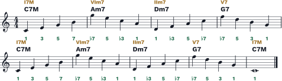
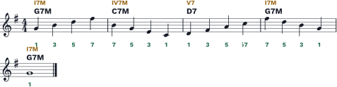
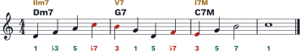
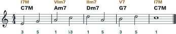
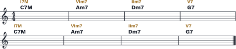
Jogo da aula: Dado harmônico
No capítulo Jogos, o dado sorteia quatro graus (por exemplo, I – IIIm7 – IV7M – V7). Descubra as cifras no tom escolhido e toque os arpejos em zigue-zague.
Teste rápido
- Qual é o II – V – I de Fá maior?
ver resposta
Gm7 – C7 – F7M - No Dm7 → G7, a nota Dó (♭7 de Dm7) caminha para qual nota do G7?
ver resposta
Si — a 3ª do G7 - Escreva I – VIm – IIm – V7 em Sol maior.
ver resposta
G7M – Em7 – Am7 – D7
Checklist para avançar
O campo harmônico menor natural
Toda escala maior tem uma “irmã” menor, chamada relativa. Ela usa exatamente as mesmas notas, só que começa no 6º grau. Dó maior e Lá menor são relativas.
O campo de Lá menor é o campo de Dó maior começando pelo Am7. Mesmos acordes, outra ordem, outra “casa”.
| I | II | III | IV | V | VI | VII | |
|---|---|---|---|---|---|---|---|
| Dó maior | C7M | Dm7 | Em7 | F7M | G7 | Am7 | Bm7(b5) |
| Lá menor | Am7 | Bm7(b5) | C7M | Dm7 | Em7 | F7M | G7 |
Comparada com a escala maior do mesmo tom, a menor natural tem três graus abaixados: 1 · 2 · ♭3 · 4 · 5 · ♭6 · ♭7. Por isso os numerais romanos ganham bemol: ♭III, ♭VI, ♭VII.
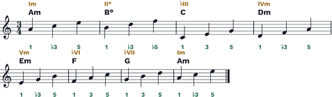
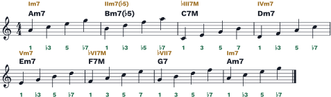
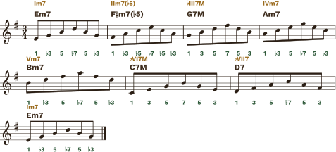
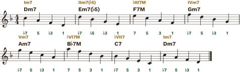
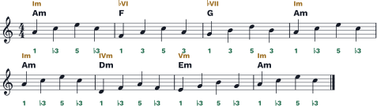
Teste rápido
- Qual é a relativa menor de Sol maior?
ver resposta
Mi menor (Em) — o 6º grau de Sol - Qual é a fórmula do campo menor natural?
ver resposta
Im7 – IIm7(b5) – ♭III7M – IVm7 – Vm7 – ♭VI7M – ♭VII7 - Qual é o ♭VI7M de Mi menor?
ver resposta
C7M - Quais são os graus da escala menor natural?
ver resposta
1 – 2 – ♭3 – 4 – 5 – ♭6 – ♭7
Checklist para avançar
O campo harmônico menor harmônico
Na menor natural, o V grau é menor (Em7) e soa “sem força” para voltar à tônica. A solução é simples: subir o 7º grau meio tom. Em Lá menor, o Sol vira Sol# — a nota sensível, que “pede” para resolver no Lá.
Menor harmônica = menor natural com o 7º grau levantado. Só mudam os acordes que têm essa nota: o I, III, V e VII.
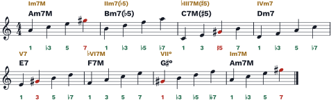
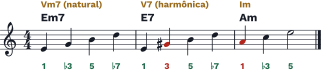
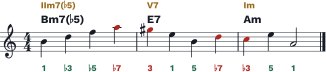
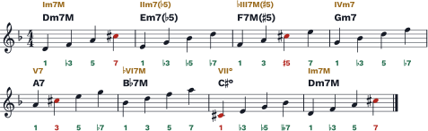
Teste rápido
- Qual grau muda da menor natural para a harmônica?
ver resposta
O 7º grau, que sobe meio tom (♭7 → 7). - Qual é o V7 de Ré menor harmônica?
ver resposta
A7 - Qual é a nota sensível de Lá menor?
ver resposta
Sol# (G#) - Qual é o VII° de Lá menor harmônica?
ver resposta
G#° (Sol sustenido diminuto)
Checklist para avançar
O campo harmônico menor melódico
A menor harmônica tem aquele salto de tom e meio entre o 6º e o 7º grau. Para deixar a melodia mais lisa, sobe-se também o 6º grau. Em Lá menor: Fá# e Sol#.
Menor melódica = menor natural com o 6º e o 7º graus levantados. É uma escala maior com a terça abaixada.
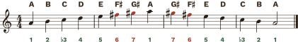
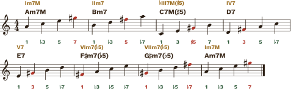
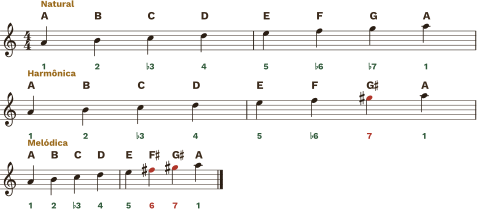
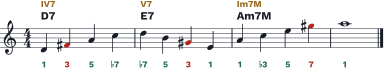
O mapa dos quatro campos
A mesma tônica (Lá) nos quatro campos. Em vermelho, o que muda em relação à linha de cima.
| I | II | III | IV | V | VI | VII | |
|---|---|---|---|---|---|---|---|
| Lá maior | A7M | Bm7 | C#m7 | D7M | E7 | F#m7 | G#m7(b5) |
| Lá menor natural | Am7 | Bm7(b5) | C7M | Dm7 | Em7 | F7M | G7 |
| Lá menor harmônica | Am7M | Bm7(b5) | C7M(#5) | Dm7 | E7 | F7M | G#° |
| Lá menor melódica | Am7M | Bm7 | C7M(#5) | D7 | E7 | F#m7(b5) | G#m7(b5) |
Teste rápido
- Quais graus sobem na menor melódica?
ver resposta
O 6º e o 7º (♭6 → 6 e ♭7 → 7). - Qual é o IV7 de Lá menor melódica?
ver resposta
D7 - Quais acordes são iguais nos campos menor harmônico e menor melódico?
ver resposta
Im7M, ♭III7M(#5) e V7
Checklist para avançar
Jogos e desafios
Dez minutos de jogo por dia fixam mais do que uma hora de leitura. Use os jogos abaixo sozinho ou em dupla — eles funcionam no celular ao lado da estante.
1 · Telefone musical
Sorteie um “número” de graus e toque na escala escolhida. Só aperte “mostrar notas” depois de tocar.
2 · Dado harmônico
O dado sorteia uma progressão de quatro graus (sempre começando no I). Diga as cifras, toque os arpejos, e só então confira.
3 · Detetive do ouvido
A cartilha toca uma tríade em arpejo, a partir de uma nota sorteada. É maior, menor, diminuta ou aumentada?
Desafios sem tela
- 4
Troca-troca em outros tons
Faça o Exercício 3.3 começando em Fá e em Sol: 7M → 7 → m7 → m7(b5). Diga o nome de cada nota que mudou.
- 5
Eco dos graus
O professor toca um arpejo curto (ex.: 1-3-5 de um acorde do campo de Dó) e o aluno repete de ouvido, dizendo os graus. Depois troquem.
- 6
Corrida dos campos
Cronometre quanto tempo você leva para dizer os sete acordes de um tom. Meta: menos de 10 segundos em C, G, F e Am.
- 7
Bingo de cifras (em grupo)
Cada aluno escreve 6 acordes do campo de Dó numa cartela. O professor toca arpejos; quem reconhecer o acorde, marca. Vence quem completar a cartela.
- 8
Pergunta e resposta
Sobre a base do Exercício 5.5, o professor toca 2 compassos e o aluno responde nos 2 seguintes, usando só notas dos arpejos.
Plano de estudo diário (15 minutos)
| Tempo | O que fazer |
|---|---|
| 3 min | Escala da semana dizendo os graus (Aula 2, 6, 7 ou 8). |
| 5 min | Campo harmônico da semana em tétrades, com ▶ Ouvir antes. |
| 4 min | Um jogo desta página (telefone, dado ou detetive). |
| 3 min | Criar: improvise sobre uma base usando só as notas dos arpejos. |
Tabelas dos campos harmônicos
Os quatro campos nos 12 tons, para consultar quando for transpor um exercício. Os tons marcados com ● são os mais indicados para quem está começando na flauta.
Campo harmônico maior
| Tom | I7M | IIm7 | IIIm7 | IV7M | V7 | VIm7 | VIIm7(b5) |
|---|---|---|---|---|---|---|---|
| C | C7M | Dm7 | Em7 | F7M | G7 | Am7 | Bm7(b5) |
| G | G7M | Am7 | Bm7 | C7M | D7 | Em7 | F#m7(b5) |
| D | D7M | Em7 | F#m7 | G7M | A7 | Bm7 | C#m7(b5) |
| A | A7M | Bm7 | C#m7 | D7M | E7 | F#m7 | G#m7(b5) |
| E | E7M | F#m7 | G#m7 | A7M | B7 | C#m7 | D#m7(b5) |
| B | B7M | C#m7 | D#m7 | E7M | F#7 | G#m7 | A#m7(b5) |
| F# | F#7M | G#m7 | A#m7 | B7M | C#7 | D#m7 | E#m7(b5) |
| F | F7M | Gm7 | Am7 | Bb7M | C7 | Dm7 | Em7(b5) |
| Bb | Bb7M | Cm7 | Dm7 | Eb7M | F7 | Gm7 | Am7(b5) |
| Eb | Eb7M | Fm7 | Gm7 | Ab7M | Bb7 | Cm7 | Dm7(b5) |
| Ab | Ab7M | Bbm7 | Cm7 | Db7M | Eb7 | Fm7 | Gm7(b5) |
| Db | Db7M | Ebm7 | Fm7 | Gb7M | Ab7 | Bbm7 | Cm7(b5) |
Campo harmônico menor natural
| Tom | Im7 | IIm7(b5) | ♭III7M | IVm7 | Vm7 | ♭VI7M | ♭VII7 |
|---|---|---|---|---|---|---|---|
| Am | Am7 | Bm7(b5) | C7M | Dm7 | Em7 | F7M | G7 |
| Em | Em7 | F#m7(b5) | G7M | Am7 | Bm7 | C7M | D7 |
| Bm | Bm7 | C#m7(b5) | D7M | Em7 | F#m7 | G7M | A7 |
| F#m | F#m7 | G#m7(b5) | A7M | Bm7 | C#m7 | D7M | E7 |
| C#m | C#m7 | D#m7(b5) | E7M | F#m7 | G#m7 | A7M | B7 |
| G#m | G#m7 | A#m7(b5) | B7M | C#m7 | D#m7 | E7M | F#7 |
| Dm | Dm7 | Em7(b5) | F7M | Gm7 | Am7 | Bb7M | C7 |
| Gm | Gm7 | Am7(b5) | Bb7M | Cm7 | Dm7 | Eb7M | F7 |
| Cm | Cm7 | Dm7(b5) | Eb7M | Fm7 | Gm7 | Ab7M | Bb7 |
| Fm | Fm7 | Gm7(b5) | Ab7M | Bbm7 | Cm7 | Db7M | Eb7 |
| Bbm | Bbm7 | Cm7(b5) | Db7M | Ebm7 | Fm7 | Gb7M | Ab7 |
| Ebm | Ebm7 | Fm7(b5) | Gb7M | Abm7 | Bbm7 | Cb7M | Db7 |
Campo harmônico menor harmônico
| Tom | Im7M | IIm7(b5) | ♭III7M(#5) | IVm7 | V7 | ♭VI7M | VII° |
|---|---|---|---|---|---|---|---|
| Am | Am7M | Bm7(b5) | C7M(#5) | Dm7 | E7 | F7M | G#° |
| Em | Em7M | F#m7(b5) | G7M(#5) | Am7 | B7 | C7M | D#° |
| Bm | Bm7M | C#m7(b5) | D7M(#5) | Em7 | F#7 | G7M | A#° |
| F#m | F#m7M | G#m7(b5) | A7M(#5) | Bm7 | C#7 | D7M | E#° |
| C#m | C#m7M | D#m7(b5) | E7M(#5) | F#m7 | G#7 | A7M | B#° |
| G#m | G#m7M | A#m7(b5) | B7M(#5) | C#m7 | D#7 | E7M | F##° |
| Dm | Dm7M | Em7(b5) | F7M(#5) | Gm7 | A7 | Bb7M | C#° |
| Gm | Gm7M | Am7(b5) | Bb7M(#5) | Cm7 | D7 | Eb7M | F#° |
| Cm | Cm7M | Dm7(b5) | Eb7M(#5) | Fm7 | G7 | Ab7M | B° |
| Fm | Fm7M | Gm7(b5) | Ab7M(#5) | Bbm7 | C7 | Db7M | E° |
| Bbm | Bbm7M | Cm7(b5) | Db7M(#5) | Ebm7 | F7 | Gb7M | A° |
| Ebm | Ebm7M | Fm7(b5) | Gb7M(#5) | Abm7 | Bb7 | Cb7M | D° |
Campo harmônico menor melódico
| Tom | Im7M | IIm7 | ♭III7M(#5) | IV7 | V7 | VIm7(b5) | VIIm7(b5) |
|---|---|---|---|---|---|---|---|
| Am | Am7M | Bm7 | C7M(#5) | D7 | E7 | F#m7(b5) | G#m7(b5) |
| Em | Em7M | F#m7 | G7M(#5) | A7 | B7 | C#m7(b5) | D#m7(b5) |
| Bm | Bm7M | C#m7 | D7M(#5) | E7 | F#7 | G#m7(b5) | A#m7(b5) |
| F#m | F#m7M | G#m7 | A7M(#5) | B7 | C#7 | D#m7(b5) | E#m7(b5) |
| C#m | C#m7M | D#m7 | E7M(#5) | F#7 | G#7 | A#m7(b5) | B#m7(b5) |
| G#m | G#m7M | A#m7 | B7M(#5) | C#7 | D#7 | E#m7(b5) | F##m7(b5) |
| Dm | Dm7M | Em7 | F7M(#5) | G7 | A7 | Bm7(b5) | C#m7(b5) |
| Gm | Gm7M | Am7 | Bb7M(#5) | C7 | D7 | Em7(b5) | F#m7(b5) |
| Cm | Cm7M | Dm7 | Eb7M(#5) | F7 | G7 | Am7(b5) | Bm7(b5) |
| Fm | Fm7M | Gm7 | Ab7M(#5) | Bb7 | C7 | Dm7(b5) | Em7(b5) |
| Bbm | Bbm7M | Cm7 | Db7M(#5) | Eb7 | F7 | Gm7(b5) | Am7(b5) |
| Ebm | Ebm7M | Fm7 | Gb7M(#5) | Ab7 | Bb7 | Cm7(b5) | Dm7(b5) |
Respostas dos exercícios
Confira só depois de tentar. Errar e corrigir ensina mais do que acertar de primeira.
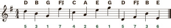
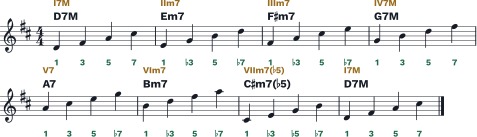
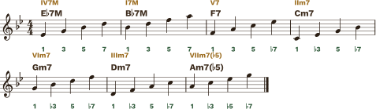
Respostas dos testes rápidos
| Aula | Respostas |
|---|---|
| 1 | 1. G · 2. Fá · 3. A, B e D · 4. Si bemol |
| 2 | 1. T–T–St–T–T–T–St · 2. F# · 3. grau 4 · 4. A (Lá) |
| 3 | 1. 1, 3 e 5 · 2. a sétima (B no C7M, Bb no C7) · 3. D, F, A, C · 4. m7(b5) |
| 4 | 1. I7M–IIm7–IIIm7–IV7M–V7–VIm7–VIIm7(b5) · 2. D7 · 3. Gm7 · 4. o V · 5. VIIm7(b5) |
| 5 | 1. Gm7–C7–F7M · 2. Si (3ª do G7) · 3. G7M–Em7–Am7–D7 |
| 6 | 1. Em · 2. Im7–IIm7(b5)–♭III7M–IVm7–Vm7–♭VI7M–♭VII7 · 3. C7M · 4. 1–2–♭3–4–5–♭6–♭7 |
| 7 | 1. o 7º grau sobe · 2. A7 · 3. G# · 4. G#° |
| 8 | 1. 6º e 7º · 2. D7 · 3. Im7M, ♭III7M(#5) e V7 |
Dúvidas frequentes
As perguntas que mais aparecem quando o flautista começa a estudar harmonia.
Se a flauta não toca acordes, por que estudar harmonia?
Porque quem improvisa, faz arranjo ou toca em grupo precisa saber “onde está” na música. Tocando as notas do acorde em sequência, o ouvido de quem escuta junta tudo e percebe a harmonia. Além disso, ler cifras deixa você tocar junto com violão e teclado sem precisar de partitura escrita.
Preciso decorar os campos nos 12 tons?
Não. Decore a fórmula (7M · m7 · m7 · 7M · 7 · m7 · m7(b5)) e as escalas dos tons que você mais usa. Com a fórmula e a escala, qualquer campo se monta em segundos. As tabelas existem para conferir, não para decorar.
Por que alguns arpejos começam mais grave que o anterior?
Para ficar na região confortável da flauta. Se todos os acordes do campo fossem subindo em sequência, os últimos ficariam agudos demais para quem está começando. Quando estiver seguro, experimente tocar tudo subindo, em outra oitava.
Qual andamento devo usar?
Comece em 60 (a opção “devagar” do botão Ouvir). Só aumente quando conseguir tocar três vezes seguidas sem errar e dizendo os graus de cabeça. Velocidade vem sozinha; entendimento, não.
O que é aquele “b” e “#” nos graus, como ♭3 e #5?
Eles comparam a nota com a escala maior da fundamental do acorde. “3” é a terça maior; “♭3” é a terça meio tom abaixo (menor). “5” é a quinta justa; “♭5” meio tom abaixo; “#5” meio tom acima.
Onde respiro nos exercícios de arpejo?
Na troca de acorde, de preferência a cada dois compassos. Assim a respiração vira parte da frase e reforça a ideia de que cada compasso é um acorde. Nos exercícios em colcheias, respire antes de ficar sem ar — não no último fôlego.
O som do botão Ouvir não sai no celular.
Confira se o celular não está no modo silencioso (no iPhone, a chavinha lateral). O áudio é gerado pela própria página e só começa depois de você tocar num botão.